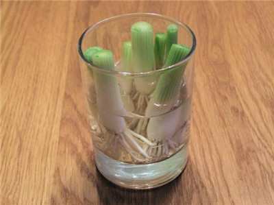

朱賀本紀
歲次丁酉年 二月廿二日
物價不斷上升，菜價也不能倖免，不如自己動手種植！這8種蔬菜(包括白菜、芹菜)不但可在家栽種，而且能不斷反覆再種。種得好的話，以後就能自給自足！除了省錢，更重要的是健康呢。
一「大蔥」
您可以留下一寸左右長、附著根部的大蔥，放置在一個盛有少許開水的小玻璃杯子中，將杯子放在光線充足的房間，大蔥便能長起來。

二「大蒜」
當大蒜開始發芽，你可以把它們放在玻璃杯中加用少量水種植。大蒜芽本身的味道較大蒜淡一點，添加到沙拉，意大利面等會有不錯的效果。
三「白菜」
將白菜根端浸在水中，並放置在光線良好的地方。大約一、兩週內，你就可以將它移植到土壤中，讓它長出新的菜葉。
四「紅蘿蔔」〖蘿蔔苗〗
把胡蘿蔔的頂部用少量水分養著，放置在光線充足的窗台就可長出蘿蔔苗，很適合用來加入沙拉中。
五「羅勒」〖七錢插、金不換、九層塔〗
剪出3至4英寸長的連莖的羅勒，放入一杯水中並將其置於陽光能直照的地方。當根長到約2英寸長時，就可換在花盆中種。
六「芹菜」〖西芹〗
切出芹菜底部，將其放置在一個浸水的碟子或小碗中，提供足夠的陽光。當葉子開始在中間長出來，就可將芹菜轉移到土壤中。
七「生菜」
把生菜頭浸在1/2英寸的水中。每天灌水令水位保持大約1/2英寸。幾天後，根和新葉就會長出，到時就可移植入土壤中。
八「芫荽」〖芫茜〗
將芫荽莖部放入水中它便將會增長。當根部長得足夠長度，就可栽種在花盆中，記著保持充足光線，約一個後就能長出一棵完整的芫荽。
Source: Healthy Body Now
朱賀的聯絡方式
電子郵箱：zhuhe@zhuhe.tw